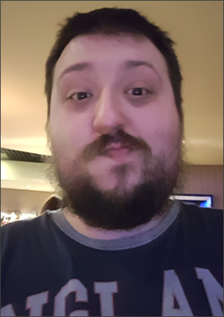
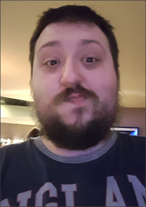

Hello and welcome to the Official Website of Star Trek: Precious
My name is Warren Mitchell and I am the creator and writer of the Star Trek Fan-Fiction story, Star Trek: Precious. I am thirty years old and currently living in London, United Kingdom. Whilst I do not work as a writer, writing fictional stories is a passion of mine. The story for Precious is set in the futuristic time period of the 25th Century with many character elements being derived from myself, in particular the main character Nathan Jenkins who is a half El-Aurian and half Caitian Starfleet Officer.
As someone who grew up in the 90s I have always had a deep love for the Star Trek franchise, being introduced to it by watching Star Trek: The Next Generation, a passion that expanded with Deep Space Nine, Voyager and Enterprise. While I never grew up on The Original Series I did enjoy the movies based on it. But let's be honest, Picard is the best!
Originally this projected started off small, way back in 2009. And while full production of this story hasn't truly progressed in that time, I hope in the coming months and years to bring an enjoyable yet familiar set of characters for you to enjoy and relate to. And if you enjoy the content that my stories provide you can always let me know!
As always, this is ultimately a passion project to show my love for everything Star Trek. I do not own the rights to Star Trek so make sure to check out the various TV Shows and Movies, including Star Trek: Discovery and Star Trek: Picard.